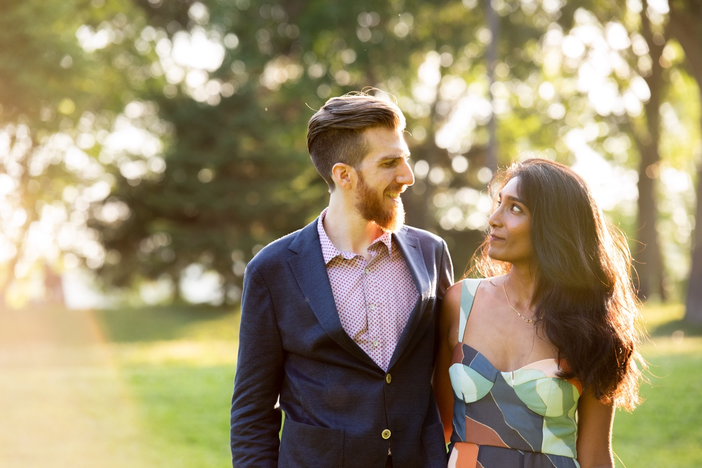

Saturday, July 11, 2020
We're having a short ceremony with 6 friends in a park near our home in Minneapolis. Our immediate family will be joining virtually, and we'll be celebrating with our extended family and friends in small-group video chats over the coming weeks. We hope you can join us!
We got engaged in March just as Minnesota was going into lockdown for the pandemic. We knew it might be a while before we could even start planning a more traditional wedding gathering, so we decided to go ahead and make the most of the current situation.
We recognize that we are getting married at a time of incredible uncertainty. We have watched as people and institutions around us have struggled to survive the multiple overlapping crises we’re facing, including a global pandemic, increasing unemployment and homelessness, and state-sanctioned violence against people of color.
George Floyd’s murder occurred about 1.5 miles from our home in Minneapolis, and the ensuing uprising in our city has underscored that we have a stake in making our communities safe and habitable for everyone. We are extremely fortunate to be in a stable financial situation that shields us from the worst effects of the current crises. As a result, we have decided to donate any cash gifts we receive to five organizations we have ties to. You can read more about these organizations and our connections to them below.
We’re accepting contributions through PayPal: paypal.me/MattAndSneha If you wish to direct your gift to a specific cause from our selections, indicate the recipient(s) in the memo. Otherwise gifts will be split among the organizations.
Various mutual aid projects sprung up in the Twin Cities to address community needs during the pandemic, particularly for healthcare workers and the unhoused. The uprisings in response to George Floyd’s murder brought a new urgency to these projects, as many more people suddenly found themselves food-insecure or homeless. We began volunteering with one of these groups in early June, distributing hot meals and groceries in an area of South Minneapolis where most grocery stores were either boarded up or destroyed.
The group has since reoriented from disaster response to a longer term goal of decommodifying access to food in the Twin Cities. They are currently operating a commercial kitchen preparing 1200 meals a week for distribution to several encampments of unhoused people, and organizing community meals to bring South Minneapolis residents together to have conversations about rebuilding our community.
Further reading:
The Recyclery is a non-profit DIY educational bike shop in North Chicago, that collects, refurbishes, and donates used bicycles to low-income people, refugees, and people experiencing homelessness. The organization also runs Open Shop hours where anyone can bring their bicycle in and work on it using the tools available, along with guidance from volunteers.
While Sneha lived in Chicago during graduate school, she served as a board member and regular volunteer at the Recyclery. Helping sustain the Recyclery was a transformative experience for Sneha, and the organization remains near and dear to her heart.
Centro de Trabajadores Unidos en la Lucha (i.e. Center for Workers United in the Struggle) is an organization that is focused on building power for low-income workers in Minnesota, particularly custodial and fast food workers. Many of CTUL’s board members are worker-activists from these industries who have organized their workplaces and communities to fight for a living wage, combat workplace harassment, and end wage theft. Much of their work is in collaboration with other community organizations that are building toward a long-term vision of an equitable, multi-cultural Twin Cities.
The Key is a youth center in Northfield, Minnesota that provides a community space for at-risk teens. The organization is a youth-led sanctuary where teens experiencing issues like food and housing insecurity can make art and music, eat free meals, and connect with each other and caring adults. Sneha worked with some of the staff at The Key to supervise a group of computer science students at Carleton who made improvements to their attendance tracking system.
A few days before Minneapolis went under lockdown for the pandemic, we adopted our beloved dog Riley from the Animal Humane Society of Minnesota. We would like to give back to this organization in thanks for the incredible amount of love and snuggles they helped bring into our life.
Animal Humane Society website